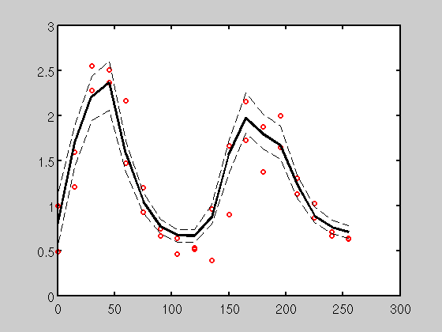

Contents
Clear everything
clear all
Load the means
M = dlmread('m1.txt');
M(:,end) = [];
Load the data
E(:,:,1) = dlmread('../../cdc/sep/data1_cdc_sep.dat');
E(:,:,2) = dlmread('../../cdc/sep/data2_cdc_sep.dat');
Choose the gene
g = 1;
Calculate the modes
for i= 1:size(M,2)
[Q,bins] = hist(M(:,i),50);
pos = find(Q==max(Q));
mode(i) = bins(pos(1));
end
Define T
T = [0:15:265];
Sort M
for i = 1:size(M,2)
M(:,i) = sort(M(:,i));
end
Plot the data
close all
figure(1);hold on
for i = 1:2
plot(T,E(g,:,i),'ro','linewidth',2);
end
TEL = 20;
TCDC = 18;
offset = (g-1)*(TEL + TCDC)+TEL;
r = offset+1:offset+length(T);
plot(T,mode(r),'k','linewidth',3);
plot(T,M(0.05*size(M,1),r),'k--');
plot(T,M(0.95*size(M,1),r),'k--');
t = figure(1)
t = get(t,'Children')
set(t,'FontSize',14);
set(t,'Box','on','LineWidth',2);
t =
1
t =
150.0071
 Display the mode and percentiles
mode(offset+1:offset+length(T))'
ans =
0.7787
1.6969
2.2059
2.3632
1.5625
1.0426
0.7648
0.6685
0.6643
0.8698
1.5627
1.9712
1.7896
1.6691
1.2220
0.8831
0.7620
0.7056
5th perc
M(0.05*size(M,1),offset+1:offset+length(T))'
ans =
0.5332
1.4217
1.9395
2.0611
1.3746
0.9181
0.6920
0.5913
0.5888
0.7974
1.3605
1.8041
1.6313
1.5171
1.0848
0.8107
0.6905
0.6385
95th Perc
M(0.95*size(M,1),offset+1:offset+length(T))'
ans =
1.1107
1.8808
2.4310
2.6015
1.7123
1.1474
0.8479
0.7284
0.7339
1.0092
1.7328
2.2511
2.0098
1.8794
1.3403
0.9883
0.8392
0.7783